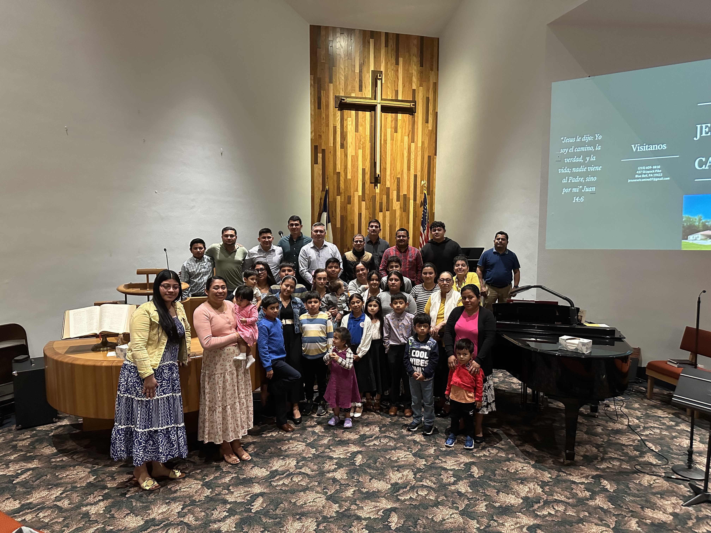
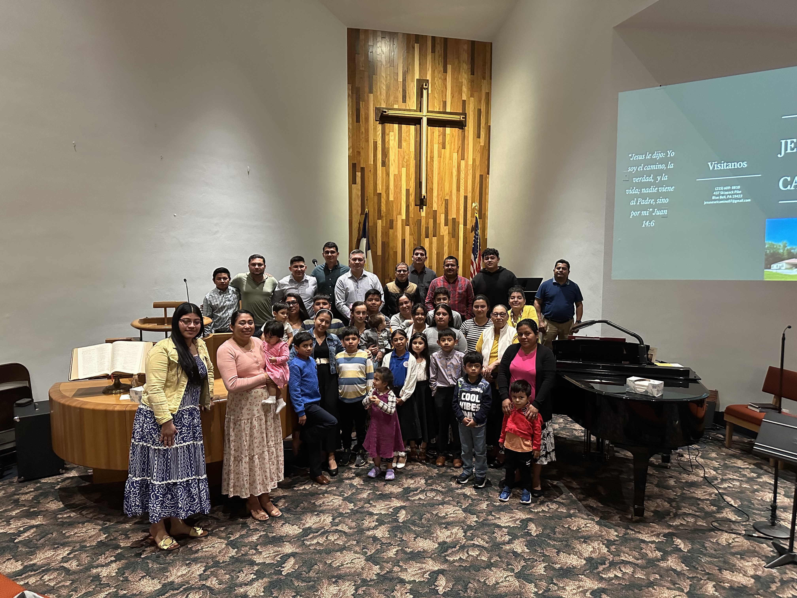

Culto de Oracion
8:30pm
Culto de Enseñanza Biblica
8 pm
Culto Evangelistico y Ministracion
4 pm
Cada ultimo domingo del mes
4 pm
El pastor Byron Mayorga y su esposa Francis Mayorga pastorean guiados por el Espiritu Santo a la hermosa congrgacion de la iglsia Jesus es el Camino. Recibiendo el llamado de Dios a pastorear, fueron guiados por el Espiritu Santo a llevar las buenas nuevas de salvacion al area de Ambler. El pastor Byron Mayorga es el primero hispanohablante en llevar el evangelio en el area de Ambler y Blue Bell. Su amor, pasion y entrega por el evangelio y su salvador Jesucristo, se ve reflejado en sus predicaciones y enseñanzas dia con dia, su vision y convicion lo hace un ganador de almas!.
 
